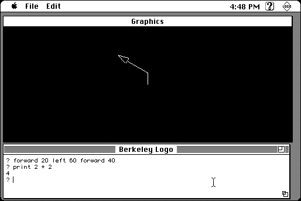

Download
ucblogo.zip (1.5M) UCB Logo 5.3 repackaged into a zipped hfs disk image and checksum file. The disk image can be mounted with Mini vMac.
ucblogo.sea.hqx (2.2M) UCB Logo 5.3 in the original format.
copyright: Regents of the University of California
mod date: Feb 1, 2003
license: GPL
from url :
Berkeley Logo (UCBLogo)
A "freeware interpreter" of Logo. Source code is included. By Daniel van Blerkom, Brian Harvey, Michael Katz, and Douglas Orleans.

If you find these downloads useful, please consider helping the Gryphel Project, which hosts them.
Here are the md5 checksums for the downloads, signed with Gryphel Key 5:
--------- GRY SIGNED TEXT --------- d4dc71fd243802f37f03a269088e8758 ucblogo.zip 06507dada6eccb2a8edba889aebe9397 ucblogo.sea.hqx ------- BEGIN GRY SIGNATURE ------- Gry/4Xa8CFcUzxdN/JnLQzkxAjSOZG72yAjkggqBkbg58xDV3rGeOVFgj3PtZ7TE R777xn2HaIkiPV4OoH2KOuVbjdMLmCzOXrXUzghs13krB8+l405DD7uNfCriZY3Q Jk66G3D0aSy10gEkmmwGNhNibsQuhgH7My4pclHrFh81D8CaRjQscDNAVSC3nIeT -------- END GRY SIGNATURE --------